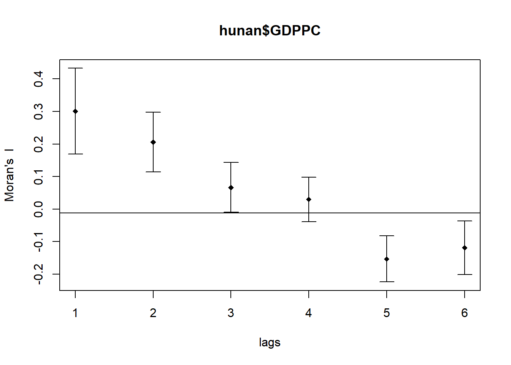

pacman::p_load(sf, spdep, tmap, tidyverse)2B: Global Measures of Spatial Autocorrelation
1. Overview
In this hands-on exercise, I learn how to compute Global and Local Measure of Spatial Autocorrelation (GLSA) by using spdep package.
2. Getting Started
2.1. The analytical question
In the context of spatial policy, one of the primary objectives pursued by local governments and planners is to ensure an equitable distribution of development across a region or province. Our primary goal is to employ appropriate spatial statistical methods to assess whether development is evenly distributed across Hunan Province in the People’s Republic of China. If the answer to this question is negative, subsequent inquiry will focus on identifying potential spatial clustering patterns. If there is evidence of spatial clustering, the final question will revolve around pinpointing the specific locations or areas where these clusters occur.
This case study is centered on the analysis of the spatial distribution of a particular development indicator, namely GDP per capita, within Hunan Province, China, as described in further detail here.
The following code chunk installs and loads sf, readr, tmap and tidyverse packages into R environment.
The data sets used are:
Hunan province administrative boundary layer at county level. This is a geospatial data set in ESRI shapefile format.
Hunan_2012.csv: This csv file contains selected Hunan's local development indicators in 2012.
3. Getting the Data Into R Environment
3.1. Importing Shapefile into R Environment
The following code chunk uses st_read() function from the sf package to import Hunan shapefile into R as simple features object.
hunan <- st_read(dsn = "data/geospatial",
layer = "Hunan")Reading layer `Hunan' from data source
`D:\scwsu\ISSS624\Hands-on_Ex2\data\geospatial' using driver `ESRI Shapefile'
Simple feature collection with 88 features and 7 fields
Geometry type: POLYGON
Dimension: XY
Bounding box: xmin: 108.7831 ymin: 24.6342 xmax: 114.2544 ymax: 30.12812
Geodetic CRS: WGS 843.2. Importing CSV File into R Environment
The following code chunk utilizes read_csv() function of readr package to import Hunan_2012.csv into R as R data frame class.
hunan2012 <- read_csv("data/aspatial/Hunan_2012.csv")
Note
Use spec() function to obtain the complete column specifications for this dataset. If the preference is not to see the column types, the column types can be specified or show_col_types = FALSE can be set to suppress this message.
3.3. Performing relational join
The following code chunk utilizes left_join() function of dplyr package to update the attribute table of hunan's SpatialPolygonsDataFrame with the attribute fields of hunan2012 dataframe.
hunan <- left_join(hunan,hunan2012) %>%
select(1:4, 7, 15)3.4. Visualising Regional Development Indicator
Next, I create a foundational map and a thematic map to visualize the distribution of GDPPC 2012. We’ll achieve this using the qtm() function from the tmap package.
equal <- tm_shape(hunan) +
tm_fill("GDPPC",
n = 5,
style = "equal") +
tm_borders(alpha = 0.5) +
tm_layout(main.title = "Equal interval classification")
quantile <- tm_shape(hunan) +
tm_fill("GDPPC",
n = 5,
style = "quantile") +
tm_borders(alpha = 0.5) +
tm_layout(main.title = "Equal quantile classification")
tmap_arrange(equal,
quantile,
asp=1,
ncol=2)
4. Global Spatial Autocorrelation
In this section, I compute global spatial autocorrelation statistics and to perform spatial complete randomness test for global spatial autocorrelation.
4.1. Computing Contiguity Spatial Weights
It is essential to create a spatial weights matrix for the study area to calculate the global spatial autocorrelation statistics. This matrix defines the neighborhood relationships between the geographic units (counties) in the study area.
The following code chunk utilizes the poly2nb() function form the spdep package to create contiguity weight matrices for the study area. This function constructs a list of neighbors where the regions share contiguous boundaries and also allows for a queen argument, which can be set to TRUE (default setting) or FALSE. If the argument is not explicitly set to “queen = FALSE”, the function will generate a list of first-order neighbors based on the Queen’s contiguity criterion.
wm_q <- poly2nb(hunan,
queen=TRUE)
summary(wm_q)Neighbour list object:
Number of regions: 88
Number of nonzero links: 448
Percentage nonzero weights: 5.785124
Average number of links: 5.090909
Link number distribution:
1 2 3 4 5 6 7 8 9 11
2 2 12 16 24 14 11 4 2 1
2 least connected regions:
30 65 with 1 link
1 most connected region:
85 with 11 linksThe summary report indicates that in Hunan, there are 88 area units. Among these, the most connected area unit is surrounded by 11 neighbors. On the other hand, there are two area units that have only one neighbor each.
4.2. Row-standardised weights matrix
Next, I assign equal weights (style=“W”) to neighboring polygons by dividing 1 by the number of neighbors each polygon has and then summing their weighted income values. While this is a straightforward way to summarize neighbor values, it has a drawback when polygons near the study area’s edges rely on fewer neighbors, potentially causing over- or underestimation of spatial autocorrelation. For simplicity, I use the style=“W” option, but there are more robust alternatives like style=“B” exist.
rswm_q <- nb2listw(wm_q,
style="W",
zero.policy = TRUE)
rswm_qCharacteristics of weights list object:
Neighbour list object:
Number of regions: 88
Number of nonzero links: 448
Percentage nonzero weights: 5.785124
Average number of links: 5.090909
Weights style: W
Weights constants summary:
n nn S0 S1 S2
W 88 7744 88 37.86334 365.9147The nb2listw() function requires an object of class nb as input. It has two main arguments: style and zero.policy.
The style argument can take values such as “W,” “B,” “C,” “U,” “minmax,” and “S.” “B” represents basic binary coding, “W” stands for row-standardized (sums over all links to n), “C” denotes globally standardized (sums over all links to n), “U” is equal to “C” divided by the number of neighbors (sums over all links to unity), and “S” corresponds to the variance-stabilizing coding scheme proposed by Tiefelsdorf et al. 1999, p. 167-168 (sums over all links to n).
If the zero.policy is set to TRUE, weights vectors of zero length are added for regions without neighbors in the neighbors list. This results in lag values of zero for these regions, equivalent to the sum of products of the zero row t(rep(0, length = length(neighbors))) %*% x, where x is an arbitrary numerical vector of length length(neighbors). The spatially lagged value of x for the zero-neighbor region will be zero, which may or may not be a meaningful choice.
4.3. Global Spatial Autocorrelation: Moran's I
The following code chunk performs Moran’s I statistical test using moran.test() function of spdep package.
moran.test(hunan$GDPPC,
listw=rswm_q,
zero.policy = TRUE,
na.action=na.omit)
Moran I test under randomisation
data: hunan$GDPPC
weights: rswm_q
Moran I statistic standard deviate = 4.7351, p-value = 1.095e-06
alternative hypothesis: greater
sample estimates:
Moran I statistic Expectation Variance
0.300749970 -0.011494253 0.004348351
Note
Statistical Conclusion: The Moran’s I statistic standard deviate of 4.7351 is significantly greater than expected under the null hypothesis of spatial randomness. The p-value (1.095e-06) suggests strong evidence to reject the null hypothesis. Therefore, we can conclude that there is a statistically significant positive spatial autocorrelation in the distribution of GDPPC values in the study area. In other words, neighboring regions tend to have similar GDPPC values, indicating the presence of spatial clustering or spatial dependence in economic development.
4.3.1. Computing Monte Carlo Moran's I
The following code chunk utilizes moran.test() function of spdep package to perform permutation test for Moran’s I statistic. A total of 1000 simulations will be performed.
set.seed(1234)
bperm= moran.mc(hunan$GDPPC,
listw=rswm_q,
nsim=999,
zero.policy = TRUE,
na.action=na.omit)
bperm
Monte-Carlo simulation of Moran I
data: hunan$GDPPC
weights: rswm_q
number of simulations + 1: 1000
statistic = 0.30075, observed rank = 1000, p-value = 0.001
alternative hypothesis: greater
Note
Statistical Conclusion: In the Monte-Carlo simulation, the observed Moran’s I statistic of 0.30075 falls within the distribution of Moran’s I statistics generated through 1000 simulations. The p-value of 0.001 indicates that the observed Moran’s I statistic is statistically significant at a significance level of 0.05 (assuming a typical significance level). Therefore, we can conclude that there is a statistically significant positive spatial autocorrelation in the distribution of GDPPC values in the study area, consistent with the earlier conclusion. In other words, neighboring regions tend to have similar GDPPC values, indicating the presence of spatial clustering or spatial dependence in economic development.
4.3.2. Visualising Monte Carlo Moran's I
The following code chunk utilizes hist() and abline() functions.
mean(bperm$res[1:999])[1] -0.01504572var(bperm$res[1:999])[1] 0.004371574summary(bperm$res[1:999]) Min. 1st Qu. Median Mean 3rd Qu. Max.
-0.18339 -0.06168 -0.02125 -0.01505 0.02611 0.27593 hist(bperm$res,
freq=TRUE,
breaks=20,
xlab="Simulated Moran's I")
abline(v=0,
col="red") 
Note
Statistical Conclusion: The observed Moran’s I statistic (0.30075) is significantly higher than the mean of the simulated Moran’s I statistics (-0.01505), indicating a statistically significant positive spatial autocorrelation. The histogram and summary statistics provide a visual and numerical representation of the distribution of simulated Moran’s I values, with the observed value clearly standing out as an outlier on the right tail of the distribution.
The following code chunk plot the values by using ggplot2 package.
simulated_data <- data.frame(Moran_I = bperm$res[1:999])ggplot(simulated_data, aes(x = Moran_I)) +
geom_histogram(binwidth = 0.02, fill = "grey", color = "black") +
labs(x = "Simulated Moran's I", y = "Frequency") +
geom_vline(xintercept = 0, color = "red", linetype = "dashed") +
theme_minimal()4.4. Global Spatial Autocorrelation: Geary's
4.4.1. Geary's C test
The following code chunk performs Geary's C test for spatial autocorrelation by using geary.test() of spdep package.
geary.test(hunan$GDPPC, listw=rswm_q)
Geary C test under randomisation
data: hunan$GDPPC
weights: rswm_q
Geary C statistic standard deviate = 3.6108, p-value = 0.0001526
alternative hypothesis: Expectation greater than statistic
sample estimates:
Geary C statistic Expectation Variance
0.6907223 1.0000000 0.0073364
Note
Statistical Conclusion: The observed Geary C statistic of 0.6907223 is significantly lower than the expectation of 1.0000000 under the null hypothesis of spatial randomness. Additionally, the p-value of 0.0001526 is highly significant, indicating that there is strong evidence to reject the null hypothesis. This suggests that there is a spatial clustering pattern in the distribution of GDPPC values in the study area, and the observed values are not consistent with spatial randomness.
4.4.2. Computing Monte Carlo Geary's C
The following code chunk performs permutation test for Geary's C statistic by using geary.mc() of spdep package.
set.seed(1234)
bperm=geary.mc(hunan$GDPPC,
listw=rswm_q,
nsim=999)
bperm
Monte-Carlo simulation of Geary C
data: hunan$GDPPC
weights: rswm_q
number of simulations + 1: 1000
statistic = 0.69072, observed rank = 1, p-value = 0.001
alternative hypothesis: greater
Note
Statistical Conclusion: The observed Geary C statistic of 0.69072 is significantly lower than the values obtained from the Monte-Carlo simulations (with a p-value of 0.001). This suggests that there is strong evidence to reject the null hypothesis of spatial randomness. Therefore, there is a spatial clustering pattern in the distribution of GDPPC values in the study area, and the observed values are not consistent with spatial randomness.
4.4.3. Visualising the Monte Carlo Geary's C
The following code chunk is used plot a histogram to reveal the distribution of the simulated values.
mean(bperm$res[1:999])[1] 1.004402var(bperm$res[1:999])[1] 0.007436493summary(bperm$res[1:999]) Min. 1st Qu. Median Mean 3rd Qu. Max.
0.7142 0.9502 1.0052 1.0044 1.0595 1.2722 hist(bperm$res, freq=TRUE, breaks=20, xlab="Simulated Geary c")
abline(v=1, col="red") 
Note
Statistically, it is observe that the mean of the simulated Geary C values (1.0044) is very close to 1, and the distribution of values is centered around 1. This suggests that the observed Geary C statistic of 0.69072 is significantly lower than the expected value of 1, indicating a statistically significant spatial clustering pattern in the distribution of GDPPC values in the study area.
5. Spatial Correlogram
Spatial correlograms are useful for exploring spatial autocorrelation in data or model residuals. They depict correlation between observations as the distance between them increases, typically using indices like Moran’s I or Geary’s C. While not as fundamental as variograms, they provide rich information for spatial analysis.
5.1. Compute Moran's I correlogram
The following code chunk utilizes sp.correlogram() of spdep package to compute a 6-lag spatial correlogram of GDPPC. The global spatial autocorrelation used in Moran's I. The plot() of base Graph is then used to plot the output.
MI_corr <- sp.correlogram(wm_q,
hunan$GDPPC,
order=6,
method="I",
style="W")
plot(MI_corr)
Plotting the output alone may not offer a complete interpretation due to the presence of non-significant autocorrelation values. Therefore, it is crucial to gain a comprehensive understanding of the analysis by printing out the complete analysis report, as demonstrated in the following code chunk.
print(MI_corr)Spatial correlogram for hunan$GDPPC
method: Moran's I
estimate expectation variance standard deviate Pr(I) two sided
1 (88) 0.3007500 -0.0114943 0.0043484 4.7351 2.189e-06 ***
2 (88) 0.2060084 -0.0114943 0.0020962 4.7505 2.029e-06 ***
3 (88) 0.0668273 -0.0114943 0.0014602 2.0496 0.040400 *
4 (88) 0.0299470 -0.0114943 0.0011717 1.2107 0.226015
5 (88) -0.1530471 -0.0114943 0.0012440 -4.0134 5.984e-05 ***
6 (88) -0.1187070 -0.0114943 0.0016791 -2.6164 0.008886 **
---
Signif. codes: 0 '***' 0.001 '**' 0.01 '*' 0.05 '.' 0.1 ' ' 15.2. Compute Geary's C correlogram and plot
The following code chunk utilizes sp.correlogram() of spdep package to compute a 6-lag spatial correlogram of GDPPC. The global spatial autocorrelation used in Geary’s C. The plot() of base Graph is then used to plot the output.
GC_corr <- sp.correlogram(wm_q,
hunan$GDPPC,
order=6,
method="C",
style="W")
plot(GC_corr)
The following code chunk is used to print out the analysis report.
print(GC_corr)Spatial correlogram for hunan$GDPPC
method: Geary's C
estimate expectation variance standard deviate Pr(I) two sided
1 (88) 0.6907223 1.0000000 0.0073364 -3.6108 0.0003052 ***
2 (88) 0.7630197 1.0000000 0.0049126 -3.3811 0.0007220 ***
3 (88) 0.9397299 1.0000000 0.0049005 -0.8610 0.3892612
4 (88) 1.0098462 1.0000000 0.0039631 0.1564 0.8757128
5 (88) 1.2008204 1.0000000 0.0035568 3.3673 0.0007592 ***
6 (88) 1.0773386 1.0000000 0.0058042 1.0151 0.3100407
---
Signif. codes: 0 '***' 0.001 '**' 0.01 '*' 0.05 '.' 0.1 ' ' 1